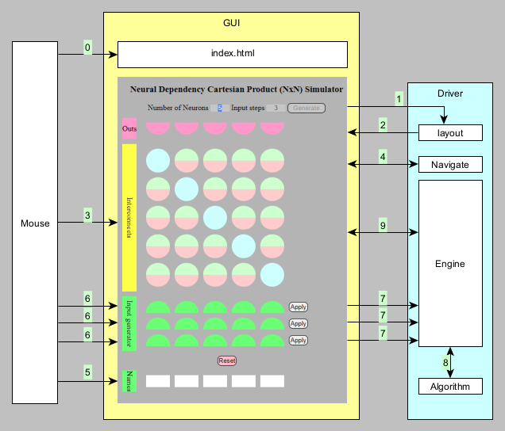

This shows a diagram of the simulator components and state dependencies between them.

0) when index.html is clicked, the GUI shows inputs where the user can specify the layout parameters.
1) When the Generate button is clicked, the driver Layout generator is called, which
2) sets up the NxN data structure, neuron outputs and Input Generator as html elements, according to the specified layout parameters.
3) as the mouse is moved over a GUI NxN element,
4) the driver Navigation code is called to highlight the element and it's associated elements.
5) edit Names for the inputs.
6) edit the rows of the Input Generator each with a pattern of input values, so the rows represent the dynamics of the Inputs.
On the left,
7) Apply the Input Generator rows in sequence, so the Input dynamics are presented to NxN.
Each Apply calls the Engine, which:
- copies the generator input pattern to the NxN neurons.
- then emulates the parallel operation of natural neural systems by making 2 passes over the NxN, scanning all the synapses on each pass
and calling the Algorithm module for each synapse. This emulates the uniformity of operation of the neurons in a natural neural systems.
- the Algorithm sets the states of the input and output sides of the synapse.
Click the Reset button to set the Output, NxN and Input Generator values to null.
MIT License
Copyright (c) 2021 Nicholas John Dennis
Permission is hereby granted, free of charge, to any person obtaining a copy
of this software and associated documentation files (the "Software"), to deal
in the Software without restriction, including without limitation the rights
to use, copy, modify, merge, publish, distribute, sublicense, and/or sell
copies of the Software, and to permit persons to whom the Software is
furnished to do so, subject to the following conditions:
The above copyright notice and this permission notice shall be included in all
copies or substantial portions of the Software.
THE SOFTWARE IS PROVIDED "AS IS", WITHOUT WARRANTY OF ANY KIND, EXPRESS OR
IMPLIED, INCLUDING BUT NOT LIMITED TO THE WARRANTIES OF MERCHANTABILITY,
FITNESS FOR A PARTICULAR PURPOSE AND NONINFRINGEMENT. IN NO EVENT SHALL THE
AUTHORS OR COPYRIGHT HOLDERS BE LIABLE FOR ANY CLAIM, DAMAGES OR OTHER
LIABILITY, WHETHER IN AN ACTION OF CONTRACT, TORT OR OTHERWISE, ARISING FROM,
OUT OF OR IN CONNECTION WITH THE SOFTWARE OR THE USE OR OTHER DEALINGS IN THE
SOFTWARE.